記憶に残る体験を
スクールでは、ツールの使い方を基礎から学び、デザインを「見せる」だけでなくユーザーの操作環境を考えながらUI/UXのバランスをとり、実装する重要性を知りました。 webデザイナーであるトレーナーの方から「なぜこの設計にしたのか」を常に問われた経験から、目的に沿った構造や動線を意識してデザインやコーディングする姿勢が身につきました。
プロフィール
前職ではカフェに勤務しながら、ラテアートを提供しておりました。 また、個人向けにイラスト制作も行っており、 一人一人の想いを形にすることに強いやりがいを感じてきました。 2024年10月よりデジタルハリウッドSTUDIO by LIGに入学。webを通して有意義な体験を提供できるように日々学んでいます。
スクールでの学び
スクールでは、ツールの使い方を基礎から学び、デザインを「見せる」だけでなくユーザーの操作環境を考えながらUI/UXのバランスをとり、実装する重要性を知りました。 webデザイナーであるトレーナーの方から「なぜこの設計にしたのか」を常に問われた経験から、目的に沿った構造や動線を意識してデザインやコーディングする姿勢が身につきました。
WEBサイト、バナー、ロゴの作成ができます。ターゲットに伝わるデザインを目標に、目的に応じたレイアウトや配色設計、フォント選びなどを意識したデザインを心がけています。 参考サイトを集めてデザインの傾向を分析し、ユーザーの目的や導線を意識した情報設計を学んでいます。
HTMLやCSSを用いてwebサイトの作成ができます。また、JavascriptやGSAPを使用した動きのあるサイトの作成も可能です。 レスポンシブ対応も行い、デザインを正確に再現することを心がけています。 直近で作成したwebサイトには、Vue.jsのフレームワークを使い、日々スキルアップに取り組んでいます。
イラスト制作
イラスト制作では、アイコンや服装デザイン等、さまざまなイラストをご依頼されました。
そのため新しいデジタルの技法を学んだり、参考資料を集めたりして表現の幅を増やす努力をしてきました。
単なる絵ではなく、見る人の心を動かすストーリーになれるように色彩表現にこだわりました。
興味関心
趣味で動画編集をしています。 Adobe After effectsとPremiere proを使って、友人のゲームのプレイ集の紹介ムービーを作成しました。 新しいソフトに触れるのが好きで、TOPページのファーストビューもサイトにあうように、星空と流星を作成しました。
前職では、カフェで希望されたデザインをラテアートにしたり、そのラテアートを立体にするパフォーマンスをしておりました。 海外からご来店されるお客様も多かったので、進んで英語で接客しました。 その空間がお客様にとって最高の体験になるように、目の前で仕上げるラテアートで記憶に残るひとときを演出していました。